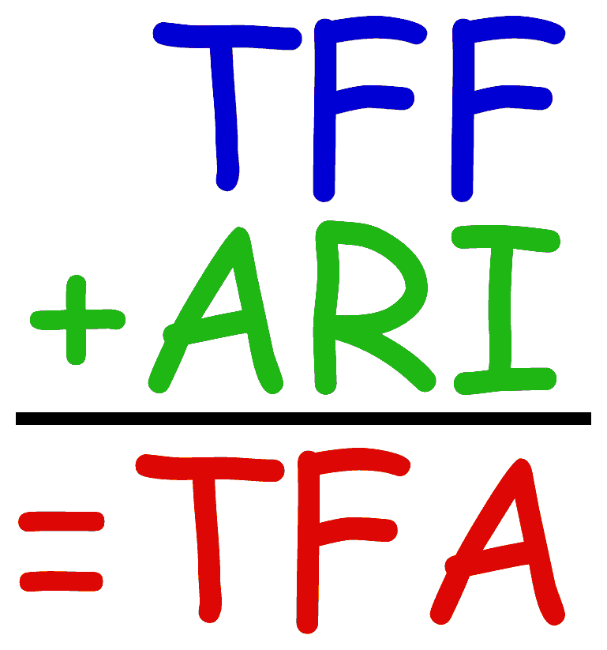

The TFA Language

The TFF Language, plus ...
Defined Sorts, Functions, Predicates
- Defined types (unbounded, infinite precision):
$int, $rat, $real
- Numeric constants:
1234, -4321,
123/456, -321/654,
123.456, -321.654,
123.456E78, -321.654e-87
- Defined functions (ad hoc polymorphic over the types):
$uminus,
$sum,
$difference,
$product,
$quotient,
$quotient_?,
$remainder_? (? = e, t, f)
$floor,
$ceiling,
$truncate,
$round
$to_int,
$to_rat,
$to_real
- Defined predicates (ad hoc polymorphic over the types):
$less,
$lesseq,
$greater,
$greatereq,
$is_int,
$is_rat
An Example
Controversial Parts
- $quotient and $quotient_?
- $to_rat for reals
- Prefix for ease of parsing, infix might come later